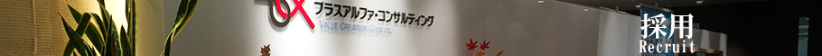
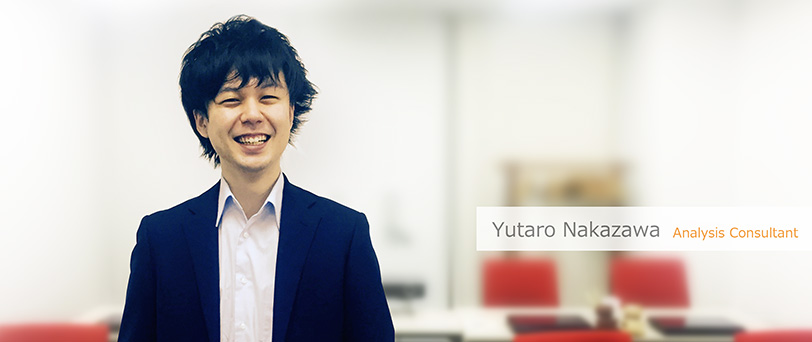

| トップページ ＞ 社員インタビュー ＞ Yutaro Nakazawa |
|

|
| 1990年生まれ、京都府出身。2012年、株式会社きちりに新卒入社。イタリアン業態店舗、カフェ業態店舗を立ち上げから従事し、店舗責任者の経験を経て 2015年に株式会社プラスアルファ・コンサルティングに入社。現在、カスタマーリングス分析コンサルティンググループ 兼 夢社関西プロジェクト推進室にて、主に関西の利用企業様のマーケティング施策の支援を行う。 |
|
どのような仕事をしていますか？ 私の所属は、「カスタマーリングス事業部 分析コンサルティンググループ」になります。CRMソリューションの「カスタマーリングス」を導入いただいた企業様への導入支援及び、業務の効率化や顧客傾向、売り上げ傾向の見える化に繋がる施策の実施・メール、アンケートなどのアクションによる効果測定のコンサルティング/支援を行っています。その中で私は、夢みる支社（大阪支社）に在籍し、飲食業界で培ったお客さまとの信頼関係を重視し、お客様が求めているものが何かを担当者様と一緒に考え私自身も勉強しながら、企業様に対しての支援を行なっております |
|
PAC（プラスアルファ・コンサルティング）を選んだ理由は何でしたか？ 前職では、店舗の売り上げ、コスト、人の管理に携わる仕事をしながら店舗の分析から仮説をたてて業務に取り組んでいましたがもっとたくさんの企業様に支援し、自分の力を試したいという気持ちがあり出会ったのがPACでした。顧客の見える化に重視したソリューションに感銘を受け、幅広い業界と企業様に支援ができることから自身の成長に繋がると感じ入社を希望しました。 |
|
仕事で一番感動したことはなんですか？ お客様と一緒に今まで出来なかった施策を考え、顧客の見える化やアクションをすることができ担当者様と喜びを分かち合えたときです。一生懸命、担当企業様に対して、分析や提案をした際に、「ありがとう」と言って頂けることは、やりがいを感じます！ |
|
一緒に働きたい人物像を教えてください お客様のこと、一緒に働く人のことを考えて行動ができる人と働きたいです。相手のことを思い、行動にうつせる人、また目標を持った人は必ず成長でき信頼される人材になると思います。そんな人と働くことで私も刺激をうけて一緒に切磋琢磨したいなと思います。 |
|
応募を検討している人へのメッセージをお願いします 是非、一度自分の目でPACを感じにきて頂ければと思います。実際に感じることでより働く実感に繋がり、イメージが湧くと思います。その中で、PACに共感し「頑張りたい」と思えた方と一緒に働ける日を楽しみにしています！ |